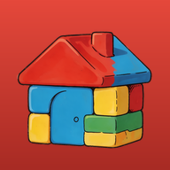

Brick Builder lets children snap together colorful bricks to build whatever they imagine. They pick a world, City, Pirate Island, Moon Base or Zombie Graveyard, and a flat baseplate or a landscape with rivers, hills and seas, then stack bricks, plates, slopes, roofs, windows and doors, plus pieces just for that world such as cars, ships, rockets and goofy zombies. They can paint, turn and erase pieces, undo mistakes, and make the land bigger when they run out of room. Made for all ages, it is a free, calm way to practice planning, building and creativity.
Part of InfennonLabs.
